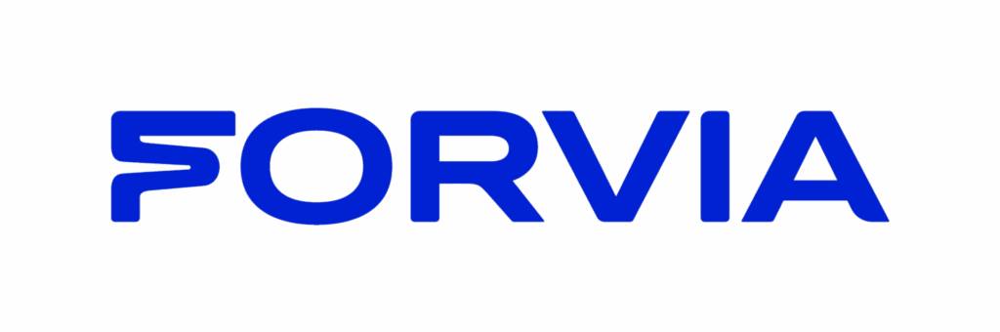
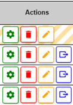
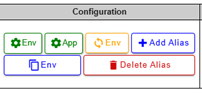

PROJETS EN ENTREPRISE
Mes réalisations professionnelles et contributions
🏢 Contexte du stage

Entreprise spécialisée dans la production d’équipements automobiles. Intégration au service IT, avec un rôle de stagiaire DevOps et un encadrement par l’équipe architecture.

Visual Studio Code, PowerShell, WinSCP, WSL/Ubuntu, GitLab, PostgreSQL, Redis et Antora (Asciidoc). Utilisation d’une application métier (DORY) pour l’inventaire des architectures.
🌟 Projet Phare
Optimisation de l’application DORY
Stage DevOps centré sur l’amélioration de DORY, l’application interne d’inventaire des architectures et configurations. Mon rôle a consisté à analyser l’existant, ajouter de nouvelles fonctionnalités, améliorer l’ergonomie et mettre à jour la documentation pour faciliter l’adoption par les équipes.
✓ Ajout de fonctionnalités métier (duplication, suppression multi-alias)
✓ Internationalisation des messages d’erreur (FR/EN)
✓ Documentation mise à jour + création d’une FAQ
📚 Autres Projets
Ajout de messages d’erreur bloquants quand l’environnement ou la machine n’est pas sélectionné. Mise en place d’un libellé bilingue (FR/EN) via fichier JSON.

Création d’un bouton et d’un pop-up permettant de dupliquer la configuration d’un environnement vers un module. Intégration de l’action côté interface et alignement UX.

Ajout de la suppression de plusieurs alias (frontend + backend). Création d’une page FAQ via Antora pour clarifier les nouvelles fonctionnalités.